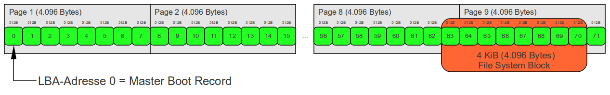
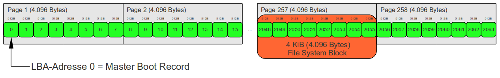

MBR（主引导记录）硬盘
MBR早在1983年的IBM PC DOS 2.0中就已经提出，比Linux诞生的时间还要早。主引导记录是指采用MBR分区的第一个扇区，这个扇区由三个部分组成：bootloader、硬盘分区表DPT和结束标志字（0x55AA）。 mbr磁盘结构如下图所示:

- part1: bootloader，位于主引导扇区的前 446 个字节，这一段代码由BIOS加载到内存中的0x7c00，目的是加载硬盘上其他分区上更大的加载器（如操作系统的启动加载器）。在早期的Linux中，这一部分代码对应的是bootsect.S，更大的加载器则是setup.S。
- part2: 分区表，由于这部分只有64字节，而每一个分区表项占据了16字节，因此有MBR最多支持四个分区的说法，但是其中一个分区可以作为扩展分区，然后在这个扩展分区上继续划分逻辑分区。分区表的各项含义如下表。
| 偏移 | 含义 |
|---|---|
| 第 1 字节 | 标志位（80H=活动分区，00为非活动分区） |
| 第 2 3 4 字节 | 起始磁头号（第2字节）、扇区号（第3字节低6位）、柱面号（剩下的10位） |
| 第 5 字节 | 分区类型（00 = 未使用、0F=扩展分区、83=Linux分区…） |
| 第 6 7 8 字节 | 结束磁头号、扇区号、柱面号 |
| 第 9 10 11 12 字节 | 逻辑起始扇区号（LBA模式） |
| 第 13 14 15 16 字节 | 总扇区数 |
创建一个MBR分区的虚拟磁盘
1 | // 建立一个 img 文件模拟硬盘 |
MBR Gap
在创建第一个分区的时候，我们会发现 fdisk 的默认的第一个分区起始扇区是2048（不可以设置低于2048的值），空出了 1MB 的空间
1 | Command (m for help): n |
关于这部分空间，GRUB 文档中是这样描述的
With this(MBR) partition table format, there are two ways to install GRUB: it can be embedded in the area between the MBR and the first partition (called by various names, such as the “boot track”, “MBR gap”, or “embedding area”, and which is usually at least 1000 KiB), or the core image can be installed in a file system and a list of the blocks that make it up can be stored in the first sector of that partition.
以上这段话大意是说 MBR 硬盘的第一个分区开始位置和 MBR 扇区之间是有”缝隙“的，通常情况下这个”缝隙“至少有1000kb，当这个”缝隙”存在时 GRUB 将会安装在这个”缝隙”内。当然这个”缝隙”也可能不存在或者很小，这是由于历史原因导致的，老式的软盘显然就不会有这么大的”缝隙“，在这种情况下， GRUB 将会安装在文件系统内，这种情况会比较少，因为文件系统可能会移动这些存放 GRUB 的块。目前的硬盘都能够保证至少 1MB 的”缝隙“。
为什么会有 最小 1MB 的 MBR Gap
过去第一个分区的起始扇区总是63，但是随着技术的发展，这样的分区方式出现了一些问题。
磁盘有物理扇区大小和逻辑扇区大小，我们平时说的磁盘扇区大小为 512 字节，实际上这个指的是逻辑扇区大小为 512 字节。磁盘的物理扇区是磁盘内部的最小单元大小，老式的软盘大小就是 512 字节，但是现在的硬盘的物理扇区大小可能是 4k 甚至是 8k。
现在的文件系统也是按簇管理，通常一个簇大小为 1k、4k 甚至更大
在这样的情况下，设想一个具有 4k 簇大小的文件系统，如果磁盘的物理扇区大小为 4k 或者是 8k，那么文件系统的每一个簇都会横跨两个物理扇区，这样就会带来严重的性能下降问题。

为了解决这个问题，现在的磁盘分区总是会默认从最低 1MB 开始。
